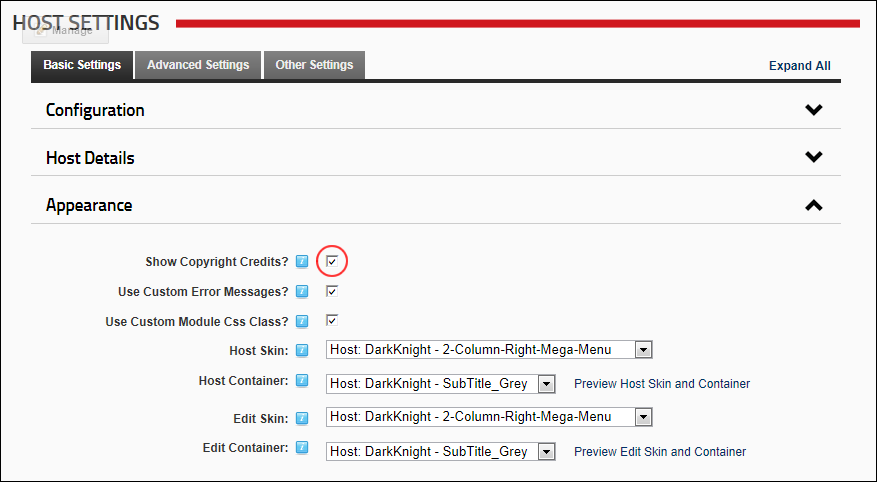

- Mark
 the check box to display credits.
the check box to display credits. - Unmark
 the check box to hide credits.
the check box to hide credits.
How to enable the DNN credits to be displayed in the title bar of the Web browser for all sites in this DNN installation. E.g. (DNN 6.1.0). This setting also enables DotNetNuke credits to be displayed in the HTML source code which can be downloaded for site pages.
